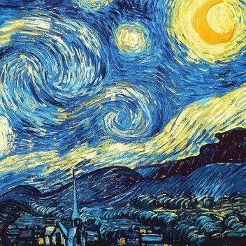
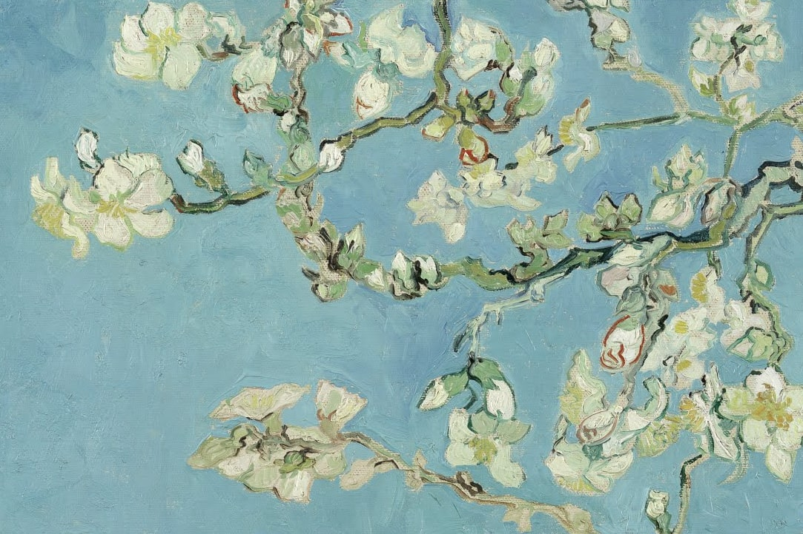
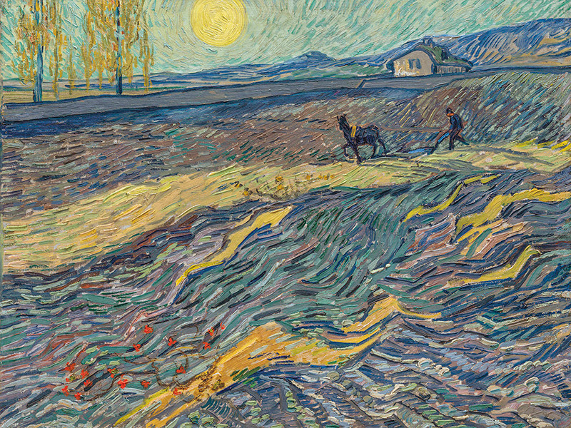
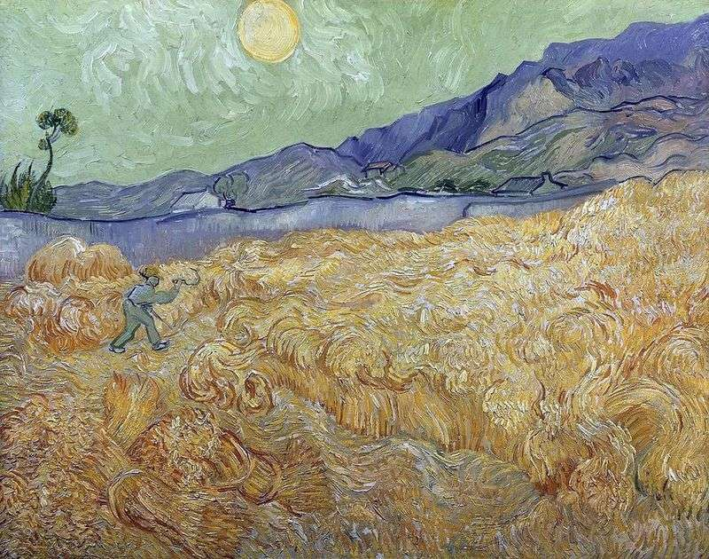

СБОРНИК СТИХОТВОРЕНИЙ

ЮНОШЕСКИЙ МАКСИМАЛИЗМ В ПОЭЗИИ
ОТЧАЯНИЕ
СИЛА ВОЛИ
ЛЮБОВЬ
МЫСЛИ МОЛОДОСТИ...

Мы тех, с кем встречи ждали с не терпеньем,
Кого боготворяли, возносили в небеса,
Сейчас, играя в незнакомцев с гордым опасеньем,
Вонзаем безразличие в сердца
И тех, кого притворно мы не знаем,
Дурманя голову самим себе,
В толпе чей взгляд мы гордо пропускаем,
Любили больше всех загадочных небес
И тех, кого случайно вовремя встречали
И ждали нового письма,
Кому мы поздней ночью написали,
Когда судьба прохладна нам была
Рассудку умному нам нужно покориться,
Гордыню в степень возвести-
Так думали, желая безболезненно смириться,
Осознавая, что погибнем мы без них
Легко забыть совсем их мы не можем,
Как ни остерегая сердце и себя,
И путь без них нам так ничтожен,
Что гордо умираем мы любя.

Друг мой, живешь ты или существуешь?
С какими мыслями ты спишь?
А, может, праздно торжествуешь
И мир за пир благодаришь?
Скажи, ты раб пустых желаний:
Богатство, власть, а может похоть?
Ответь, заполнено ли твое сознание
Бесцельной, глупой суматохой?
Молчишь? Так это шаг к успеху.
Задумайся о том, зачем живешь,
Зачем ты создаешь себе помехи
И почему у себя жизнь крадешь
Ты узник клетки, вокруг стены.
Ты ограничил сам себя,
А тело связано веревкой лени,
И разум сохнет, и душа скупа.
Гори всем сердцем и зажигай других.
Пусть мир увидит твое пламя,
Пусть свет прольется на твоем пути,
И ты увидишь все своими же глазами.
И вот когда последняя искра угаснет,
Смерть спросит холодно тебя:
«Жил ты или существовал напрасно?»
И заберет, сверкающей косой маня.

В ее глазах все видят мрак,
И тьму, и беспросветную черту.
В ее одежде, волосах
Все видят только темноту.
Все думают: она черства,
Холодная, как в зиму ночь.
Без стука сердца все жива,
И дьявола как будто дочь
Все видят в ней горячего орла
Со строгим взором на лету,
А я ту птичку, что мила,
Что дарит Сердцу теплоту
В ее глазах я вижу солнце, звёзды,
Тот яркий жизни огонёк.
И в радость, звонкий смех и слёзы
Они сияют, как последний уголёк
Я вижу в ней огромный мир любви.
Его мне дарит каждую минуту.
В ее душе те Розы расцвели,
Чья ценность выше изумруда.
Ее улыбка заставляет сердце биться,
Перевернёт все чувства вспять.
В ее смущении мое волнение таится.
Она не верит в это, боится доверять
Автор: Чурикова Анастасия
Контакты:
vk.com